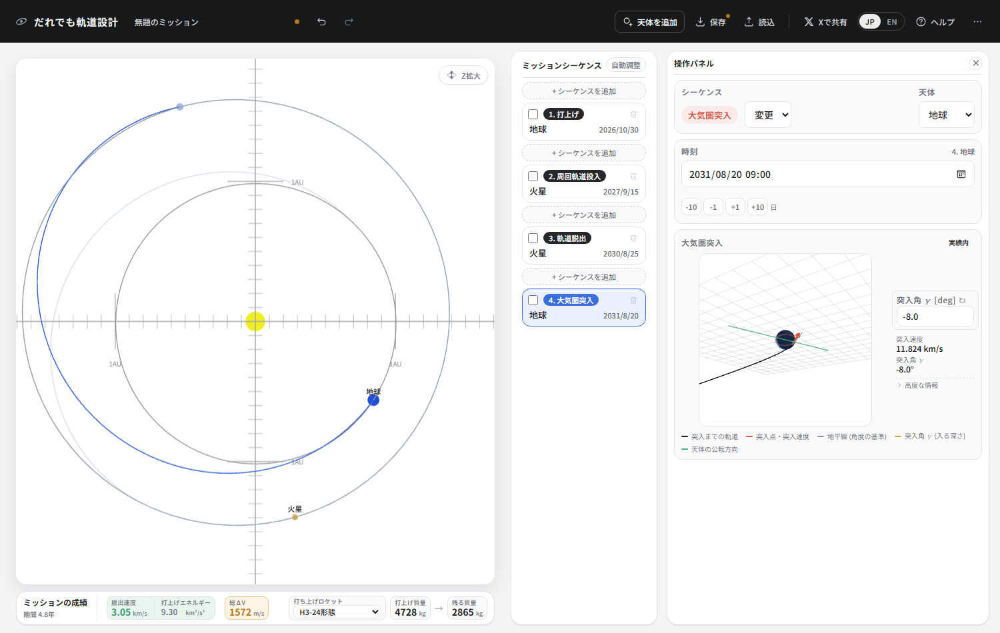
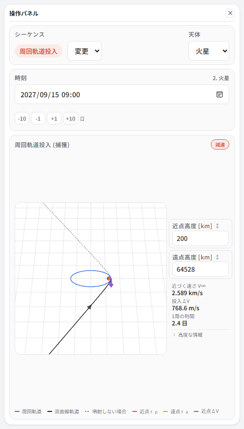
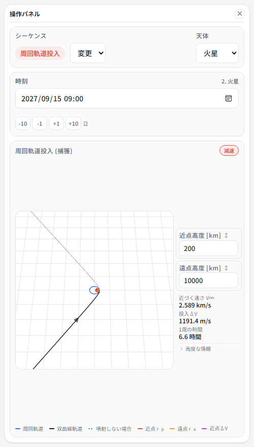
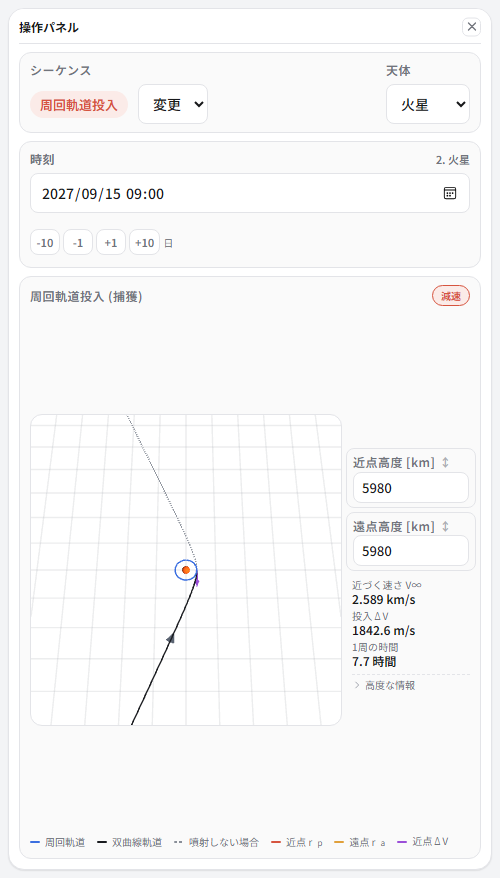
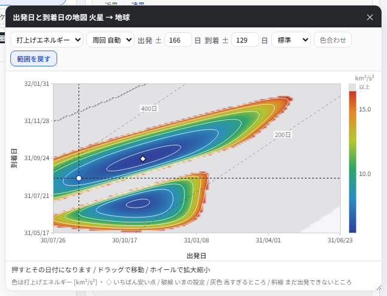
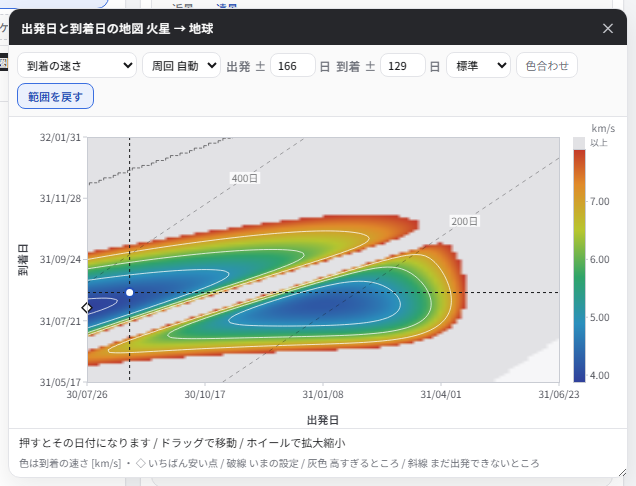
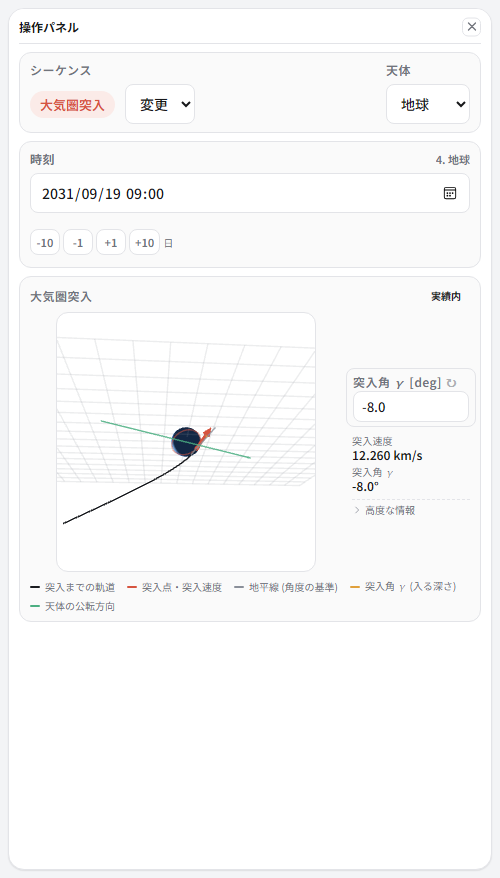
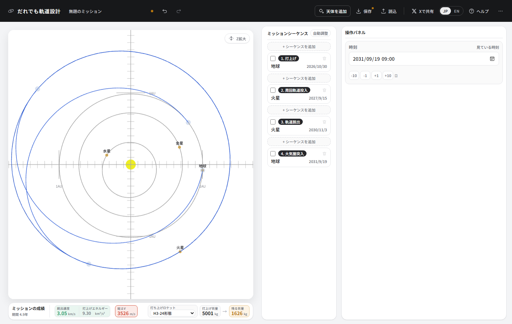

① There and back from Mars
Fly to Mars, enter orbit, stay a while, set off again, and finish by entering Earth's atmosphere. We will build a mission shaped like JAXA's Martian Moons eXploration (MMX).
What you will learn here
- Travel between planets has a fixed season (the launch window)
- Entering orbit needs a burn, and the size of the orbit changes how big it is
- Finding a window with a porkchop plot
- The return window has to be found separately from the outbound one
- Atmospheric entry sets its own speed. All you choose is the angle
Building it
-
Make four sequences and set them, from the top, like this.
No. Type Body Date 1 Launch Earth 2026/10/30 2 Orbit insertion Mars 2027/09/15 3 Orbit departure Mars (matched automatically) 2030/08/25 4 Atmospheric entry Earth 2031/08/20 “Orbit departure” matches itself to the body of the “Orbit insertion” just before it, so its body selector is closed. -
Fill in the dates and the four legs join up.

The outbound leg bulges outward, the stay rides along with Mars' own orbit, and the return leg falls inward. During the stay the spacecraft moves with Mars, so it is drawn on top of Mars' orbit.
Reading the outbound leg

Leaving Earth at an escape velocity of 3.05 km/s, launch energy (C3) 9.30 km²/s². As trajectories to Mars go, that is about as cheap as it gets. It is very close to the ellipse that touches both Earth's and Mars' orbits — the Hohmann transfer. Very close, but not the same. Why is set out in Hohmann transfers and the third dimension.
Try moving the dates back and forth. Shift them by a month and the escape velocity leaps. Earth and Mars only line up favourably about every 26 months. That is the launch window, and it is why a spacecraft's launch date cannot be moved.
Entering orbit around Mars

You come in at Mars at 2.589 km/s (V∞). Left alone you would sail straight past, so you burn at closest approach to slow down and get caught into an ellipse. That burn is the insertion ΔV.
The apoapsis altitude starts pinned to its ceiling. That ceiling is half the Hill radius; beyond it the Sun's tidal pull will not let an orbit hold. And if all you want is to be captured, that big ellipse is the cheapest thing there is.
Try dropping the apoapsis altitude to 10000 km.

768.6 → 1191.4 m/s. One and a half times. A low orbit is better for observing, or for landing, but you pay for it in fuel. Where you circle is decided by what the mission is for.
Matching Phobos' altitude
MMX is not going to Mars itself but to its moon Phobos. Phobos circles 9376 km from Mars' centre — an altitude of about 5980 km. Let us put ourselves into a circular orbit at the same height: set both periapsis and apoapsis altitude to 5980.

The period is 7.7 hours — the same as Phobos' own (7 hours 39 minutes). Circling at the same height gives the same period, so of course it does; but that is what it means to be going round the same place at the same speed as Phobos. The real MMX then moves on to a special orbit around Phobos itself (a quasi-satellite orbit).
The price is the insertion ΔV: 768.6 → 1842.6 m/s, 2.4 times the big ellipse. Going to Phobos is where it gets expensive. The real MMX eases that load by splitting the orbit insertion into three separate burns.
Finding the return window on a map
The way home also needs a season when Mars and Earth line up. We found the outbound one by nudging dates on a hunch; this time let the app do the looking.
Reading a porkchop plot

Every combination of departure date (across) and arrival date (up) is solved exhaustively and coloured in. In trajectory design this is called a porkchop plot (one story has it that the contours look like a cut of pork).
| Blue areas | Easy combinations. The redder, the harder |
| ◇ | The easiest point |
| The dashed cross | The current setting. Tells you at a glance how good a spot you are in |
| Grey | Too expensive to be worth colouring |
| Diagonal lines | Contours of flight time (200 days, 400 days…). A band sloping down to the right is a constant number of days |
There are two islands. That is characteristic of a porkchop plot: the upper island goes the long way round the Sun, the lower one the short way. Joining the same two points, the direction you go round gives a different solution. Why the two are not joined up is explained in Hohmann transfers and the third dimension.
The current setting (where the dashed lines cross) sits on the edge of the upper island. Not bad, but not the bottom. The ◇ is a little further up and to the right — departing around November 2030.
Changing the colour to see another face of it
The dropdown at the top left changes what the colour stands for. Try “Arrival speed”.

Where you can leave cheaply and where you can arrive gently are not the same place. On a sample return the speed of the return is the speed of entry, so this map matters too. The faster the capsule comes in, the harder it is to design against the heat.
Clicking, and checking that it improved
Click around the ◇ (departing 2030/11/03, arriving 2031/09/19).
The reason the mission stays at Phobos for over three years between the two legs is to wait for this window. The real MMX likewise launches in 2026 and returns in 2031, and most of that is observation at Phobos and waiting for the way home.
Re-entering the atmosphere

The last sequence is atmospheric entry. There is no field for the speed, because the entry speed follows entirely from how fast you arrived and Earth's gravity. The only thing this app lets you decide is the angle you come in at (the entry angle γ). A real mission can move the landing site by changing the rotation angle, but that does not change how demanding the mission is.
Too shallow and the atmosphere throws you back into space; too steep and the heat and deceleration are more than you can take. You can get down safely between roughly −14 and −5.5 degrees. Move the angle and you will also see that the entry speed does not change.
The badge at the top right is a guide to how demanding that entry speed is. 12.260 km/s is “within experience” — inside the range set by Stardust, the fastest re-entry any human-made object has made, at 12.9 km/s.
The finished article

| Item | This design | The real MMX |
|---|---|---|
| Launch | 30 October 2026 | 20 October 2026 (planned) |
| Launch energy C3 | 9.30 km²/s² | around 10 |
| Arrival at Mars | 15 September 2027 | 2027 |
| Orbit | circular at 5980 km (period 7.7 h) | Phobos quasi-satellite orbit (period 7.7 h) |
| Return to Earth | 19 September 2031 | 2031 |
| Total ΔV | 3526 m/s | around 4 km/s |
| Mass left | 1537 kg | dry mass about 1450 kg |
Against a mass left of 1537 kg, the real spacecraft's dry mass is about 1450 kg. Getting that close from the skeleton of the trajectory alone works because most of a spacecraft's weight is settled by where it goes and where it stops.